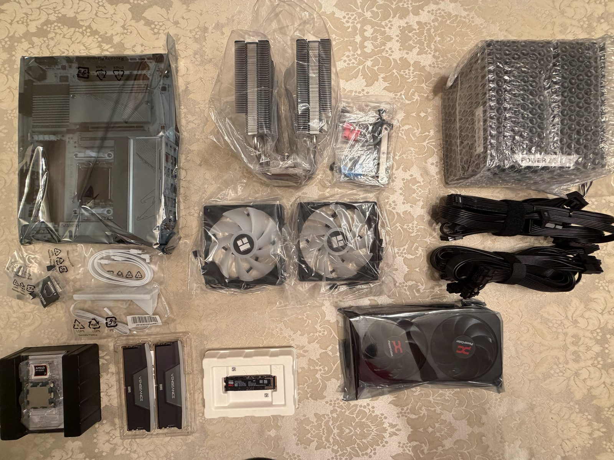
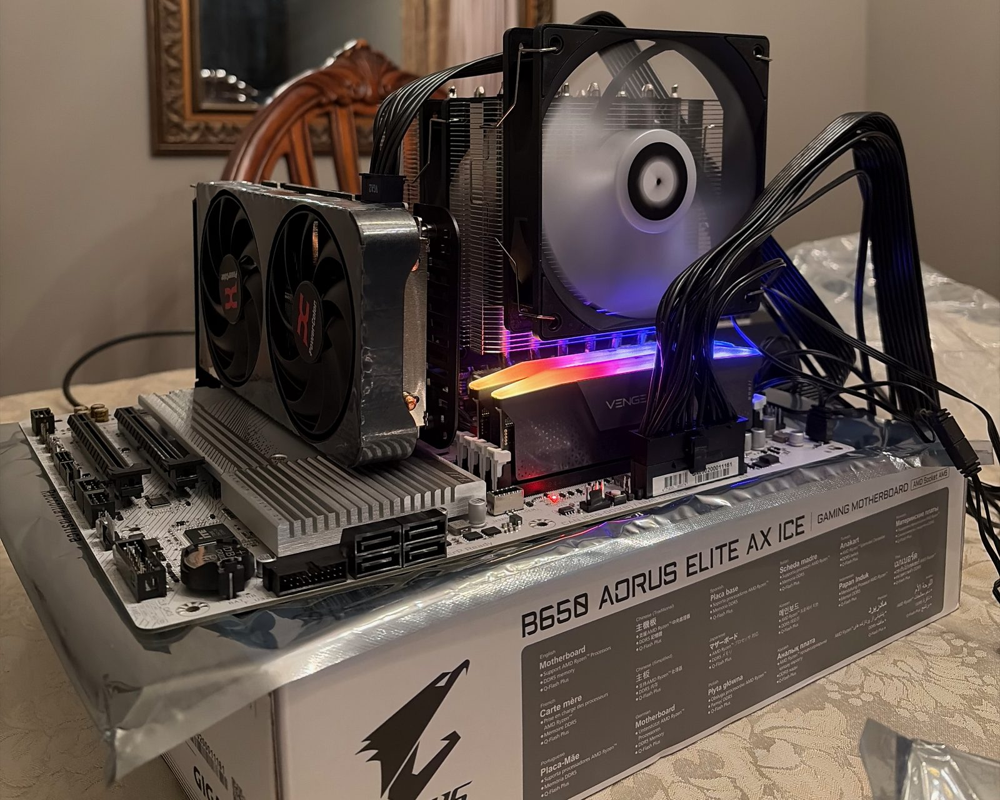

Computer Engineering student at
Raphael Talusan
I work across the hardware stack, from FPGA systems-on-chip and RTL design to RISC-V operating systems. Currently a Systems Engineering Co-Op at Raytheon, and open to Summer 2027 internships in digital design, FPGA development, and design verification.
About me
I got into computers because I grew up a gamer, and stayed because I'm a problem solver.
Today that means hardware. Away from class and work, I'm usually still building something, like my new PC or new relationships. 😁


- Studying
- Computer Engineering, Statistics minor
UIUC, graduating Dec 2027 - Focus
- Digital Design & Hardware Verification
- Currently
- Systems Engineering Co-Op at Raytheon, ECE teaching assistant, and taking operating systems (ECE 391)
- Seeking
- Summer 2027 internships and Fall/Spring co-ops in Digital Design, FPGA Development, or Design Verification
My Key Projects
All projectsLet's work together
Have a role or a project in mind? I'd love to hear about it.